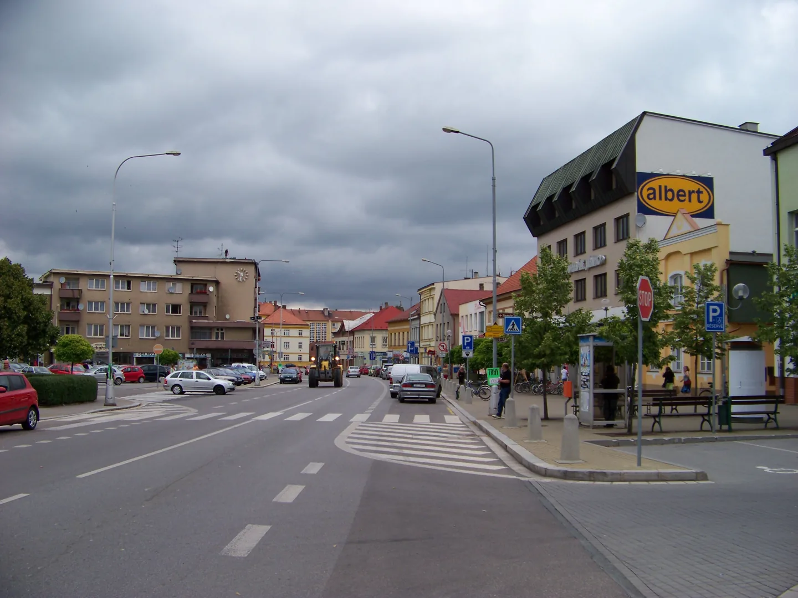

O městě Holice
Holice se nachází v Pardubickém kraji. Jejich historii připomíná barokní kostel, výroba obuvi (již pouze historie) i místa spojená s květnem 1945.
Kde leží Holice
Holice leží v severní části Pardubického kraje, na rozhraní Polabské nížiny a podhůří Orlických hor. Orientačními body v širším okolí jsou Pardubice, Hradec Králové a Vysoké Mýto.
Z náměstí T. G. Masaryka se můžete vydat po stezce Od Holuba k Malichovi. Provede vás centrem i městskými parky.

Historie města
Holice se v písemných pramenech objevují už v roce 1336. Později se tu rozšířila výroba obuvi a město se stalo důležitým centrem okolních obcí. Několik milníků jeho historie najdete v přehledu níže.
- 1336 První písemná zmínka o Holicích.
- 1736 - 1739 Vznik současné barokní stavby kostela sv. Martina.
- 1931 Povýšení Holic na město.
- 1945 Květnové povstání a zničení historické radnice.
Zdroj: město Holice - poloha a historie. ; Zdroj: farnost Holice - kostel sv. Martina.
Holice dnes
Na procházku slouží Městský park ve Smetanově ulici a Sokolský park u křižovatky Holubovy a Růžičkovy ulice. Za kulturou můžete zajít do muzea nebo kulturního domu.
Jak město vypadá, ukazuje fotogalerie. S příjezdem vám pomohou praktické informace.
Na první návštěvu
Na krátkou návštěvu si vyberte muzeum nebo procházku centrem. Pokud máte víc času, můžete projít celou městskou stezku nebo vyrazit směrem k Vysokému Chvojnu.
Vybrat místo k návštěvě